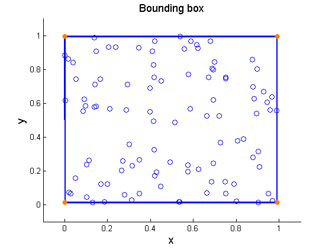

Bounding box of a random point set in 2-dimensional space
Contents
Initial data
Set the random number generator.
rng(1);
Set the dimension of the problem.
d=2;
Set the points the bounding box of which is to be calculated.
points=rand(100,d);
Processing
Find the maximum and minimum coordinates.
maxp=max(points); minp=min(points);
Form the extreme points and add them to the point set.
extrp=[maxp;minp]; p1 = reshape(extrp(:,1),[2 1]); p2 = reshape(extrp(:,2),[1 2]); p1 = p1(:,ones(2,1)); p2 = p2(ones(2,1),:); extrp=[p1(:) p2(:)];
Perform random perturbations to the extreme points to avoid roundoff errors in convhull_nd.
extrp=extrp+0.001*rand(size(extrp));
Find the point identities defining each facet of the bounding box of the point set.
chull=convhull_nd(extrp);
Find the number of facets.
size(chull,1)
ans =
4
Plots
Plot the bounding box of the point set.
Find the first and the second point identity of each edge of the bounding box.
node1=chull(:,1); node2=chull(:,2);
Find the x and y coordinates of the first and second point of each edge of the bounding box.
x1=extrp(node1,1); x2=extrp(node2,1); y1=extrp(node1,2); y2=extrp(node2,2);
Arrange the coordinate data.
X1=[x1,x2]'; Y1=[y1,y2]';
Plot the bounding box.
figure('Name','Bounding box','NumberTitle','off') scatter(points(:,1),points(:,2)) hold on line(X1,Y1,'marker','.','markersize',20,'markeredgecolor',[1 0.5 0],... 'linestyle','-', 'linewidth',2,'color','blue'); xlabel('x','FontSize',13); ylabel('y','FontSize',13); title('Bounding box','FontSize',13) axis([-0.1 1.1 -0.1 1.1])
Contact author
(c) 2014 by George Papazafeiropoulos First Lieutenant, Infrastructure Engineer, Hellenic Air Force Civil Engineer, M.Sc., Ph.D. candidate, NTUA
Email: gpapazafeiropoulos@yahoo.gr
Website: http://users.ntua.gr/gpapazaf/